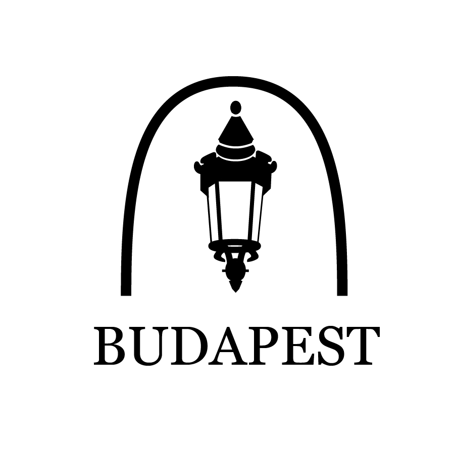

Budapest

OBJECTIVE
Design the logo for a foreign city.
RESULTS
Budapest is the capital city of Hungary. This city has a vast history dating back to the 19th century during times of Nazi rule but is known for its beautiful scenery. The focus of this project was to capture Budapest's historical relevance as well as its stunning landmarks.
SKETCHES


Final 3 Designs
